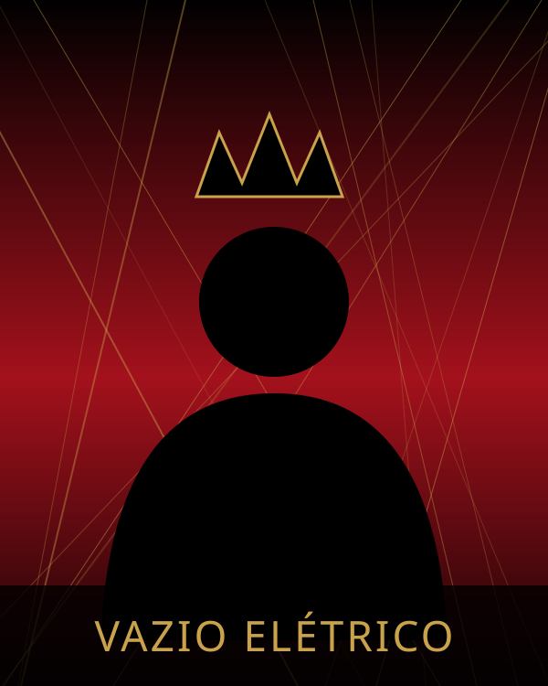
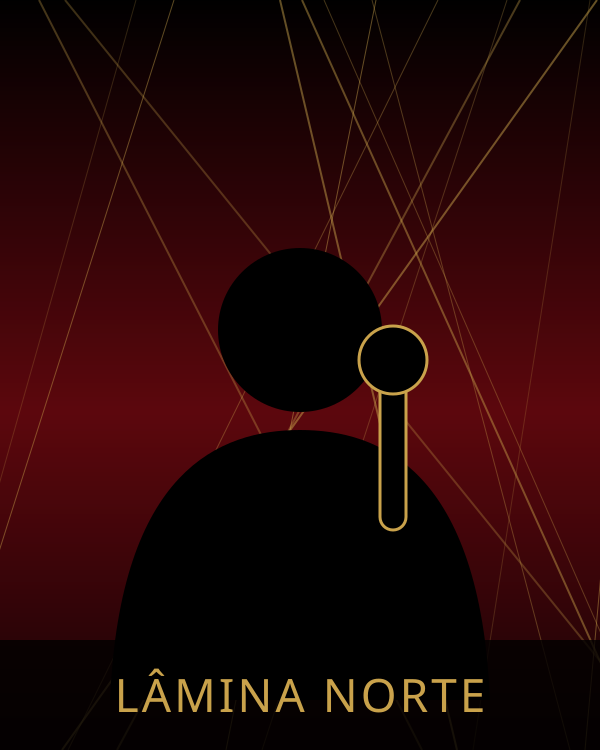
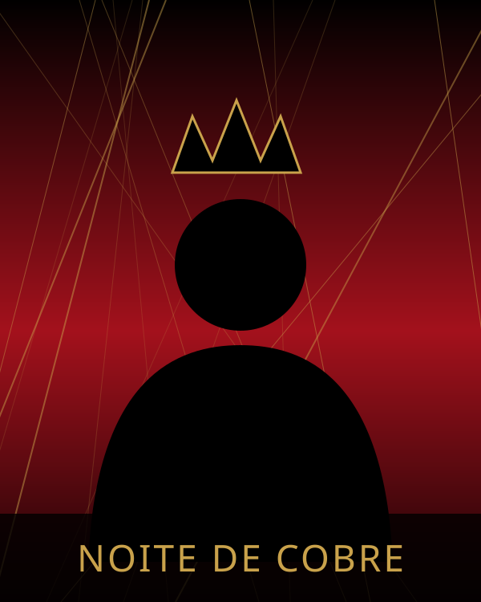
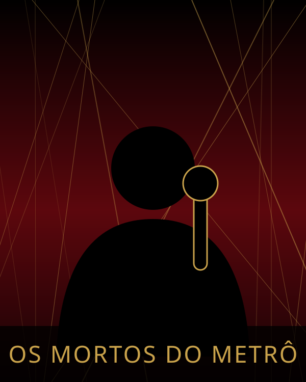
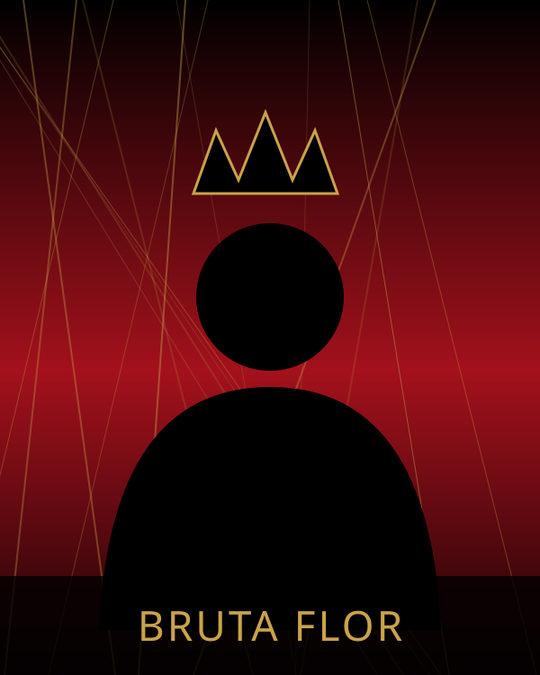
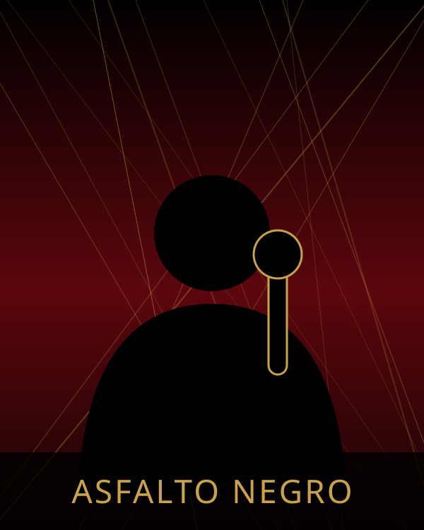

1/12 · 22:30
Cinza Carmim
Rock alternativo
Palco Subsolo
Nove bandas, três noites. Portões às 18h.
1/12 · 22:30
Rock alternativo
Palco Subsolo

1/12 · 20:45
Pós-punk
Palco Túnel

1/12 · 19:00
Hardcore melódico
Palco Galeria

2/12 · 22:30
Stoner e blues pesado
Palco Subsolo

2/12 · 20:45
Rock psicodélico
Palco Subsolo

2/12 · 19:00
Punk paulistano
Palco Túnel

3/12 · 22:30
Rock gótico
Palco Subsolo

3/12 · 20:45
Garage rock
Palco Galeria

3/12 · 19:00
Metal tradicional
Palco Túnel